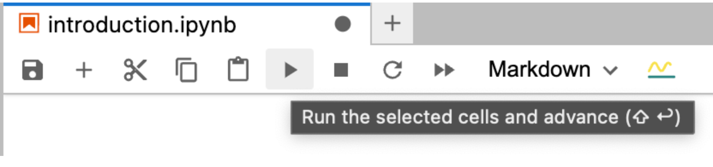

Introduction to the Jupyter Lab interface#
Today computing is used everywhere. We are going to introduce you to Jupyter Lab, which is a computing environment that you can use to write Python code to solve problems, do analysis, make figures, and more.
Tour of the browser interface#
The Jupyter lab browser interface has a few main parts. The main window this cell is in is where most computations are done. This window is made of interactive cells; some are text based, and some are code based. You can click on a cell to make it “active” so you can interact with it. The active cell will show a blue bar on the left. You can also use the up/down arrows to change what cell is selected. There may be tabs at the top, where you can select different files, or other open windows.
At the top of the frame are menus. You can use these to open files, or perform other tasks on the active tab.
On the left of the window are buttons to open a file explorer, see what is running, or see a table of contents. The table of contents is clickable, so you can jump to any cell that is labeled there.
Jupyter notebooks#
You are reading a Jupyter notebook. It is a file that ends in .ipynb, in this case you are reading introduction.ipynb. A notebook is made of cells; this one is a text-based cell using a markup language called Markdown. It is a pretty simple way to write plain text.
The next cell is a Code cell. It looks different than a Markdown cell. The background is light grey, and there is a count indicator next to it like [N]: which indicates if the cell has been run, and the execution count.
You can run this cell several different ways. First select it by clicking on it. Then press Ctrl-enter to run it, or click the run button in the button menu under the tab. It looks like an arrow pointing to the right. Note that each time you run the cell, the execution count will become one higher.

print('Hello World')
Hello World
In the cell above we ran our first Python command that prints a string. The print is in green because it is a command. 'Hello World' is the string. It is red in color to indicate it is a string. We use single quotes here, but you can also use double quotes.
Select the empty cell below, and then type a command to output Hello SAMS!.
Introduction to Python with Jupyter#
Our aim today is to get just enough introduction to some big ideas in Python to do some data analysis. Now you know that Jupyter notebooks are a way to type code into a cell, and then run it to see what the output is.
Basic calculations#
Python is very good at doing basic calculations with numbers. You can do all the usual things with algebra. Here is addition.
2 + 3
5
This next cell might have a surprise; you only see the output for the last line.
2 + 3
2 - 3
-1
You can either print both lines, or you could separate them into separate cells.
print(2 + 3)
print(2 - 3)
5
-1
Here are the basic algebraic operators. There are a few new ideas in this cell in addition to the operators:
The 5 operations are surrounded by parentheses, which group them so you see all the results.
# is a comment, and Python ignores everything after it on that line
(1 + 1, # addition
1 - 2, # subtraction
3 * 2, # multiplication
2 / 3, # division
2**3) # exponentiation
(2, -1, 6, 0.6666666666666666, 8)
Note
Python does not provide basic math functions like sin, cos, exp “out of the box”. We will see soon how to use functions like those.
Variables#
One of the first things we need to be able to do is store results so that we can reuse them later. Variables also make your work more readable.
We define variables like this:
a = 3
To see how we can use them, suppose we have the quadratic equation:
\(a x^2 + b x + c = 0\). The solution to this equation is known to be \(x = \frac{-b \pm \sqrt{b^2 - 4 a c}}{2 a}\).
Now for concreteness, suppose we have \(a = 0.5\), \(b = 2.5\), and \(c = 2\). Without variables we write:
(2.5 + ((-2.5)**2 - 4 * 0.5 * 2)**0.5) / (2 * 0.5), (2.5 - ((-2.5)**2 - 4 * 0.5 * 2)**0.5) / (2 * 0.5)
(4.0, 1.0)
Note the extensive use of parentheses to make sure the order of operations is correct. We also use **0.5 for the square root here.
Otherwise, that is a lot of repetition of values, and not easy to see that it is clearly correct. Let’s do it again with variables.
a = 0.5
b = -2.5
c = 2
(-b + (b**2 - 4 * a * c)**0.5) / (2 * a), (-b - (b**2 - 4 * a * c)**0.5) / (2 * a)
(4.0, 1.0)
Now, you can more easily see the structure of the quadratic equation as we wrote it above, and it is easier to see that this structure is correct. The remaining question now is only to see if \(a,b,c\) are correctly defined.
Variables are defined persistently, and you can use them in other cells.
a + b + c
0.0
Exercise Use the quadratic equation to find the roots of \(x^2 - 5 x + 6=0\).
Show code cell source
a = 1
b = -5
c = 6
(-b + (b**2 - 4 * a * c)**0.5) / (2 * a), (-b - (b**2 - 4 * a * c)**0.5) / (2 * a)
(3.0, 2.0)
One of the big benefits of using a notebook like this is documenting your work. You can see exactly what you did, and you can rerun the notebook later if needed. It is easy to make a copy of your notebook to try something new, or edit this notebook to do something differently.
Brief introduction to data structures#
Python provides several data structures, or types of data. We previously looked at strings. Here we only consider numbers and lists.
An integer is a whole number like -1, 0, 123.
A float is a number with decimals like 1.02
A list is like a container of things, the syntax looks like [1, 2.1, 4]. The things do not have be the same, you can mix the types of data in them.
A potential source of confusion occurs when we try to do algebra on these. Python lets you “add” things, but addition means different things for different objects. For numbers, it is addition in the algebraic sense.
For strings and lists though, addition means concatenate, or join them. Other operations are sometimes also defined for these, e.g. subtraction and multiplication.
'Hello' + ' ' + ' World'
'Hello World'
[1, 2] + [3, 4, 5]
[1, 2, 3, 4, 5]
[1, 2] * 3 # makes a new list that is 3 copies of the original
[1, 2, 1, 2, 1, 2]
In data science this is usually not what we want to do with lists of numbers. Instead, we want to do operations on each element of the list. For this we need a different data structure called an array. With arrays we can do algebraic operations. We discuss those next.
Numpy#
As mentioned earlier, the core Python language does not provide most mathematical functions out of the box. You have to import these functions from somewhere to use them. Numpy is a numerical Python library that provides arrays, and functions that work on arrays. To use these we have to import them into the notebook like this.
import numpy as np
import numpy as np
Now we can create an array, and then do elementwise algebraic operations on it.
a = np.array([1, 2, 3])
2 * a
array([2, 4, 6])
Numpy provides many ways to create arrays. One of the more common ones is np.linspace which creates an array of linearly spaced points from a start to end point. The default number of points is 50.
x = np.linspace(0, 2 * np.pi)
x
array([0. , 0.12822827, 0.25645654, 0.38468481, 0.51291309,
0.64114136, 0.76936963, 0.8975979 , 1.02582617, 1.15405444,
1.28228272, 1.41051099, 1.53873926, 1.66696753, 1.7951958 ,
1.92342407, 2.05165235, 2.17988062, 2.30810889, 2.43633716,
2.56456543, 2.6927937 , 2.82102197, 2.94925025, 3.07747852,
3.20570679, 3.33393506, 3.46216333, 3.5903916 , 3.71861988,
3.84684815, 3.97507642, 4.10330469, 4.23153296, 4.35976123,
4.48798951, 4.61621778, 4.74444605, 4.87267432, 5.00090259,
5.12913086, 5.25735913, 5.38558741, 5.51381568, 5.64204395,
5.77027222, 5.89850049, 6.02672876, 6.15495704, 6.28318531])
Numpy provides many mathematical functions that operate on arrays. All the standard trigonometric functions, sqrt, exp, etc. are available.
y = np.sin(x)
y
array([ 0.00000000e+00, 1.27877162e-01, 2.53654584e-01, 3.75267005e-01,
4.90717552e-01, 5.98110530e-01, 6.95682551e-01, 7.81831482e-01,
8.55142763e-01, 9.14412623e-01, 9.58667853e-01, 9.87181783e-01,
9.99486216e-01, 9.95379113e-01, 9.74927912e-01, 9.38468422e-01,
8.86599306e-01, 8.20172255e-01, 7.40277997e-01, 6.48228395e-01,
5.45534901e-01, 4.33883739e-01, 3.15108218e-01, 1.91158629e-01,
6.40702200e-02, -6.40702200e-02, -1.91158629e-01, -3.15108218e-01,
-4.33883739e-01, -5.45534901e-01, -6.48228395e-01, -7.40277997e-01,
-8.20172255e-01, -8.86599306e-01, -9.38468422e-01, -9.74927912e-01,
-9.95379113e-01, -9.99486216e-01, -9.87181783e-01, -9.58667853e-01,
-9.14412623e-01, -8.55142763e-01, -7.81831482e-01, -6.95682551e-01,
-5.98110530e-01, -4.90717552e-01, -3.75267005e-01, -2.53654584e-01,
-1.27877162e-01, -2.44929360e-16])
matplotlib#
Looking at arrays is not convenient. It is much more common to make plots to see how the data looks. We use matplotlib for this. As with numpy, we have to import it.
import matplotlib.pyplot as plt
Then, we can make simple plots of \(y\) vs. \(x\).
import matplotlib.pyplot as plt
plt.plot(x, y)
plt.xlabel('x')
plt.ylabel('y'); # use a ; to suppress the output of the last line.
Data files#
Very often the data we need is stored in data files. Here is an example file. This file is plain text with data in rows. The values in each row are separated by commas, so this is called a csv file, or comma-separated values file.
We use the next cell to retrieve the data and display it here. We import a new library to get the data, and then print the string that it returns.
import requests
print(requests.get('https://raw.githubusercontent.com/Tanishqa-10/AskPython/main/Sampledata.csv').text)
Name,Last Name,Member,City,Code,Amount
Jim,Doe,No,Ohio, JD,8075
Gill,McGinnis,Yes,Texas, GM,9119
Joe,Repici,Yes,Bostan, JR,8075
Stephen,Tyler,No,LA,ST,91234
Oscar,Blankman,No,NYC,OB,298
Kelly,Jet, No,Desert City,KJ,123
There are many kinds of data files, but csv is the kind we use today. Next, we learn how to read this into a data structure we can do analysis with.
pandas#
pandas a bigger, better kind of array that we will use in our analysis. Instead of an array, pandas provides something like it that is called a Dataframe. The key way we will use pandas is in reading a data file to create a Dataframe we will use in our analysis.
import pandas as pd
pandas is very powerful, and can even read urls to data files. Here we read the csv file described above to get a dataframe. Note that Jupyter displays a fancy representation of the dataframe, making it look like a table. This is a feature of Jupyter that makes it better than using plain Python.
import pandas as pd
df = pd.read_csv('https://raw.githubusercontent.com/Tanishqa-10/AskPython/main/Sampledata.csv')
df
| Name | Last Name | Member | City | Code | Amount | |
|---|---|---|---|---|---|---|
| 0 | Jim | Doe | No | Ohio | JD | 8075 |
| 1 | Gill | McGinnis | Yes | Texas | GM | 9119 |
| 2 | Joe | Repici | Yes | Bostan | JR | 8075 |
| 3 | Stephen | Tyler | No | LA | ST | 91234 |
| 4 | Oscar | Blankman | No | NYC | OB | 298 |
| 5 | Kelly | Jet | No | Desert City | KJ | 123 |
The thing that makes Dataframes so useful is we can extract columns by their name.
df['Amount']
0 8075
1 9119
2 8075
3 91234
4 298
5 123
Name: Amount, dtype: int64
We can also do analysis on the columns.
np.sum(df['Amount']), np.mean(df['Amount']),
(116924, 19487.333333333332)
We can also
plt.bar(df['City'], df['Amount'])
plt.ylabel('Amount');
pycse#
The last package I want to introduce is pycse. This is a package I wrote to augment scientific computations in Python. The context we will use it here is predominantly for fitting a line to some data.
Check out this data file. It is a little different than what we saw before. First there are 60 lines of header information that are useful for context, but not helpful for analysis. After that, there are two columns of data that we want to do some analysis on. We know from the header that the data is linear, and we want to fit a line to this data. We can use pandas to read this file too, but we have to tell it to skip 60 rows, to use spaces for separating the data, and we can provide names for the columns.
This data is from the calibration of Ozone monitors and contains a column of reference data and measured data.
df = pd.read_csv('https://itl.nist.gov/div898/strd/lls/data/LINKS/DATA/Norris.dat', skiprows=60, sep ='\s+', names=['y', 'x'])
df
| y | x | |
|---|---|---|
| 0 | 0.1 | 0.2 |
| 1 | 338.8 | 337.4 |
| 2 | 118.1 | 118.2 |
| 3 | 888.0 | 884.6 |
| 4 | 9.2 | 10.1 |
| 5 | 228.1 | 226.5 |
| 6 | 668.5 | 666.3 |
| 7 | 998.5 | 996.3 |
| 8 | 449.1 | 448.6 |
| 9 | 778.9 | 777.0 |
| 10 | 559.2 | 558.2 |
| 11 | 0.3 | 0.4 |
| 12 | 0.1 | 0.6 |
| 13 | 778.1 | 775.5 |
| 14 | 668.8 | 666.9 |
| 15 | 339.3 | 338.0 |
| 16 | 448.9 | 447.5 |
| 17 | 10.8 | 11.6 |
| 18 | 557.7 | 556.0 |
| 19 | 228.3 | 228.1 |
| 20 | 998.0 | 995.8 |
| 21 | 888.8 | 887.6 |
| 22 | 119.6 | 120.2 |
| 23 | 0.3 | 0.3 |
| 24 | 0.6 | 0.3 |
| 25 | 557.6 | 556.8 |
| 26 | 339.3 | 339.1 |
| 27 | 888.0 | 887.2 |
| 28 | 998.5 | 999.0 |
| 29 | 778.9 | 779.0 |
| 30 | 10.2 | 11.1 |
| 31 | 117.6 | 118.3 |
| 32 | 228.9 | 229.2 |
| 33 | 668.4 | 669.1 |
| 34 | 449.2 | 448.9 |
| 35 | 0.2 | 0.5 |
Let’s plot our data to see how it lools.
plt.plot(df['x'], df['y'], 'b.');
pycse provides a function called polyfit to fit polynomials to data. A line is just a polynomial of degree=1. So, we can use polyfit to fit a line to (x, y) data. polyfit returns the fit to \(y = B0 x + B1\) as \((B0, B1)\). Additionally, it provides a confidence interval on each parameter, and the standard error estimate for each parameter.
from pycse import polyfit
pars, pint, se = polyfit(df['x'], df['y'], 1)
print(pars)
---------------------------------------------------------------------------
ModuleNotFoundError Traceback (most recent call last)
Cell In[26], line 1
----> 1 from pycse import polyfit
3 pars, pint, se = polyfit(df['x'], df['y'], 1)
4 print(pars)
ModuleNotFoundError: No module named 'pycse'
se # compare these values to the values in the header
---------------------------------------------------------------------------
NameError Traceback (most recent call last)
Cell In[27], line 1
----> 1 se # compare these values to the values in the header
NameError: name 'se' is not defined
These are exactly the same as the example data file suggests. Doing exercises like this are an important way to make sure the tools you are using are doing the right things. Note that the parameters are not in the same order as in the data file, but that is because polyfit writes the equation in a different order.
It is always a good idea to see how the fit looks. We can plot the fit on the data like this. The idea is to make a linspace array over the range of the x-data, and calculate the line from the fitted parameters.
plt.plot(df['x'], df['y'], 'b.')
x = np.linspace(min(df['x']), max(df['x']))
B0, B1 = pars
plt.plot(x, B0 * x + B1, 'r-')
plt.legend(['data', 'fit']);
---------------------------------------------------------------------------
NameError Traceback (most recent call last)
Cell In[28], line 5
1 plt.plot(df['x'], df['y'], 'b.')
3 x = np.linspace(min(df['x']), max(df['x']))
----> 5 B0, B1 = pars
6 plt.plot(x, B0 * x + B1, 'r-')
7 plt.legend(['data', 'fit']);
NameError: name 'pars' is not defined
This fit looks pretty good. For now, we consider this sufficient.
Exercise: Add x and y labels to the plot above.
Wrapping up the introduction#
This concludes the introduction. This covered just enough material to get to the next step in our program, which is data analysis of historical temperature data.
The next step in our workshop starts here.
Resources#
Introduction to Python computations in science and engineering
pycse This exhaustive resource covers Python computing in science and engineering.
Tips#
Running cells#
C-enter executes the current cell and keeps it selected
shift-enter executes the current cell and selects the next cell
alt-enter executes the current cell and inserts a new cell after it.
Use the Run menu to run all the cells
Inserting cells#
You can insert cells above or below the current cell in the following ways:
With the cell selected, use the icons in the cell on the right to add a cell.
Type Esc-a to insert above the cell, and Esc-b to insert below the cell.
interrupt or restart the kernel#
Use the Kernel menu to stop a running cell, or to restart the kernel.